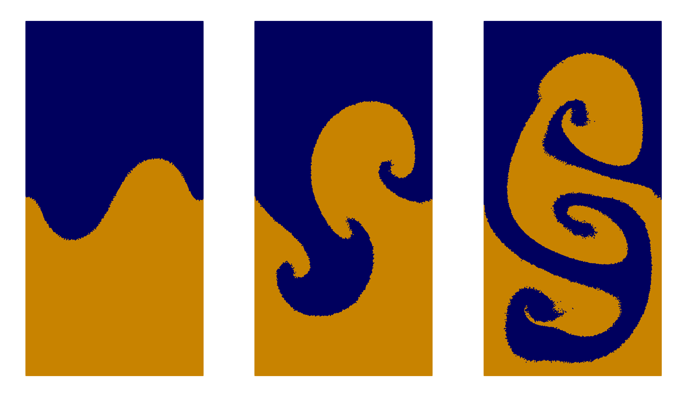

Example 5: Rayleigh-Taylor Instability
Rayleigh-Taylor is a very nice qualitative test where heavier fluid rest above a light fluid in a uniform gravitational field. This balance is obviously unstable and the fluids will try to minimize their potential by replacing each other. The transitional state often looks like a mushroom. You can get this in real life when you mix eg. coffee with milk. Some people believe this stuff is important and they made a page on wikipedia for it.
module rayleightaylor
include("../src/LagrangianVoronoi.jl")
using .LagrangianVoronoi
const rho_d = 1.0 # density of lower fluid
const rho_u = 1.8 # density of upper fluid
const Re = 420.0 # Reynold number
const Fr = 1.0 # Froude number
const c = 20.0 # speed of sound
const g = 1/(Fr^2) # gravitational acceleration
const gamma = 1.4
const xlims = (0.0, 1.0)
const ylims = (0.0, 2.0)
const N = 100 #resolution
const dr = 1.0/N
const h = 2*dr
const v_char = 1.0
const l_char = 1.0
const dt = 0.1*dr/v_char
const t_end = 5.0
const nframes = 400
const export_path = "results/rayleightaylor"Let us define some phase markers for upper and lower fluid. The phase markers must be non-negative integers.
const UP = 0
const DOWN = 1Accelerate the instability with a good initial condition, where upper and lower fluid are divided by a sinusoid.
function dividing_curve(x::Float64)::Float64
return 1.0 - 0.15*sin(2*pi*x[1])
end
function ic!(p::VoronoiPolygon)
dy = dividing_curve(p.x[1])
p.phase = (p.x[2] > dy ? 0 : 1)
p.rho = (p.phase == UP ? rho_u : rho_d)
p.mass = p.rho*area(p)
p.mu = p.rho/Re
p.P = rho_d*c^2/gamma
p.P -= max(p.x[2], dy)*rho_d*g
p.P -= min(0.0, p.x[2]-dy)*rho_u*g
p.e = p.P/(p.rho*(gamma - 1.0)) + g*p.x[2]
endThis time we need two different implicit solvers. The psolver is the good old pressure solver and projects velocity to a constraint space with zero divergence (or something similar in the compressible regime). The new msolver projects the repair velocity to a constraint space where it does not mess up the fluid phases. It is not so important, but had I not implemented it, those mathematical puritans would kick me from a Cantor staircase and stab me with a Weierstrass function.
mutable struct Simulation <: SimulationWorkspace
grid::GridNS
psolver::PressureSolver{PolygonNS}
msolver::MultiphaseSolver{PolygonNS}
E::Float64
Simulation() = begin
domain = Rectangle(xlims = xlims, ylims = ylims)
grid = GridNS(domain, dr)
populate_lloyd!(grid, ic! = ic!)
return new(grid, PressureSolver(grid), MultiphaseSolver(grid), 0.0)
end
end
function step!(sim::Simulation, t::Float64)
move!(sim.grid, dt)
gravity_step!(sim.grid, -g*VECY, dt)
ideal_eos!(sim.grid)
find_pressure!(sim.psolver, dt)
pressure_step!(sim.grid, dt)
find_D!(sim.grid)
viscous_step!(sim.grid, dt)
find_dv!(sim.grid, dt)
multiphase_projection!(sim.msolver) # apply the multiphase solver
relaxation_step!(sim.grid, dt)
return
end
function postproc!(sim::Simulation, t::Float64)
sim.E = 0.0
for p in sim.grid.polygons
sim.E += p.mass*p.e
end
percent = round(100*t/t_end, digits = 5)
println("t = $t ($(percent)%)")
println("energy = $(sim.E)")
println()
end
function main()
sim = Simulation()
run!(sim, dt, t_end, step!,
path = export_path,
vtp_vars = (:rho, :P, :v, :phase), save_csv = false,
postproc! = postproc!,
nframes = nframes
)
return
end
if abspath(PROGRAM_FILE) == @__FILE__
main()
end
endThis page was generated using Literate.jl.